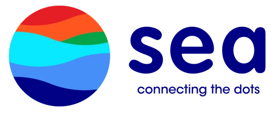

|
I am currently pursuing my Ph.D. in Computer Science at the University of Chicago, where I serve as a research assistant in the Secure Learning Lab under the guidance of Prof. Bo Li. I am also an Anthropic Fellow for AI safety research. Before joining UChicago, I was temporarily pursuing my Ph.D. studies at the Siebel School of Computing and Data Science at the University of Illinois Urbana-Champaign, where I also earned my M.S. in Computer Science. Prior to that, I completed my Bachelor's degree at Zhejiang University. I study Safe AGI, especially how to make LLMs and LLM agents reliable at scale, and explore WorldModels to improve downstream safe policy learning. My research runs as a closed loop: (i) scalable red-teaming that elicits realistic, long-horizon failures—I attended internal red-teaming evaluations of OpenAI o1, Google DeepMind, and ElevenLabs TTS with Virtue AI; (ii) theoretical guarantees via certified robustness that turn safety into provable design constraints; (iii) scalable, interpretability-guided alignments that translate circuit-level insights into generalizable mitigations; and (iv) better safety-aware reasoning for autonomous driving by leveraging additional knowledge from the world model with RL. Together, my goal is to enhance LLMs with stronger reasoning capabilities with world models and improved safety awareness while ensuring scalability. Email / CV / Google Scholar / Twitter / Github |
"Man is but a reed, the most feeble thing in nature; but he is a thinking reed." |
{kind=link}
|
NVIDIA Research
Autonomous Driving Research Intern, Santa Clara
Oct 2025 – Present
Advised by Dr. Boris Ivanovic and Prof. Marco Pavone

ByteDance Seed Research
Responsible AI Research Intern, San Jose
June 2025 – Sept 2025
Advised by Dr. Xiaojun Xu and Dr. Hang Li
Meta AI
GenAI Research Collaborator (External)
Sept 2024 – June 2025
Advised by Dr. Shuang Yang

Nuro AI
Machine Learning Research Intern (Pathfinder), Mountain View
May 2024 – Aug 2024
Advised by Dr. Aleksandr Petiushko

Sea AI Lab
Machine Learning Research Intern, Singapore
May 2023 – Aug 2023
Advised by Dr. Tianyu Pang and Dr. Chao Du
2025
ARMs: Adaptive Red-Teaming Agent against Multimodal Models with Plug-and-Play Attacks
arXiv 2025
GraphQ-LM: Scalable Graph Representation for Large Language Models via Residual Vector Quantization
arXiv 2025
GuardSet-X: Massive Multi-Domain Safety Policy-Grounded Guardrail Dataset
NeurIPS 2025
UDora: A Unified Red Teaming Framework Against LLM Agents by Dynamically Leveraging Their Own Reasoning
ICML 2025
SafeAuto: Knowledge-Enhanced Safe Autonomous Driving with Multimodal Foundation Models
ICML 2025
Guardagent: Safeguard LLM Agents by a Guard Agent via Knowledge-Enabled Reasoning
ICML 2025
MMDT: Decoding the Trustworthiness and Safety of Multimodal Foundation Models
ICLR 2025
EIA: Environmental Injection Attack on Generalist Web Agents for Privacy Leakage
ICLR 2025
KnowHalu: Hallucination Detection via Multi-Form Knowledge Based Factual Checking
ICLR 2025 Workshop on Foundation Models in the Wild
2024
Graph Chain-of-Thought: Augmenting Large Language Models by Reasoning on Graphs
ACL 2024
ChatScene: Knowledge-Enabled Safety-Critical Scenario Generation for Autonomous Vehicles
CVPR 2024
2023
DiffSmooth: Certifiably Robust Learning via Diffusion Models and Local Smoothing
32th USENIX Security Symposium (USENIX Security) 2023
CARE: Certifiably Robust Learning with Reasoning via Variational Inference
IEEE Conference on Secure and Trustworthy Machine Learning (SatML) 2023
2022
Improving Certified Robustness via Statistical Learning with Logical Reasoning
NeurIPS 2022
2021
Progressive-Scale Boundary Blackbox Attack via Projective Gradient Estimation
ICML 2021
Workshops and Competitions
Professional Service
|
|
Template from Jon Barron. |